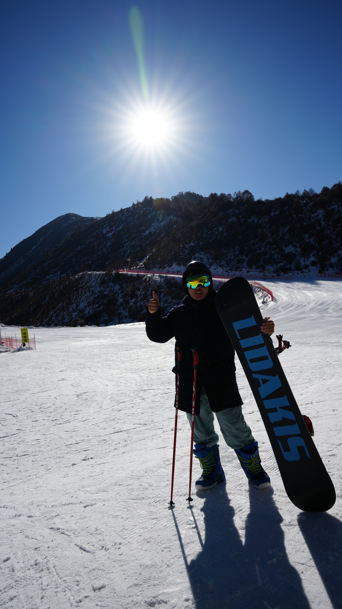

I am an AI Research Resident at FPT Software AI Center, working under the supervision of Prof. Minh-Tan Pham (IRISA, Université Bretagne Sud). Previously, I was a Research Assistant at the Data Science Laboratory (BKAI, HUST) advised by Prof. Linh Ngo Van. I received my Bachelor's degree in Data Science and Artificial Intelligence from Hanoi University of Science and Technology (HUST).
I'm always open to collaborations, discussions, and new opportunities. Feel free to reach out if you're interested in my research or would like to discuss potential projects. Email: Phamthanh060903@gmail.com
Research Interests: My current research focuses on developing principled approaches for end-to-end visual recognition with transformer- based architectures. I have a primary interest in DETR-based model, Interactive Segmentation and Knowledge Distillation in Continual Learning. I am also open to diversifying my research across various areas in the future. I’m actively seeking PhD positions in Computer Science for the upcoming academic year and excited to collaborate on impactful research!

Recent News
| Aug 2026 | ISRS-DETR: Detection-Guided Click Propagation for Remote Sensing Interactive Segmentation preprint is out on arXiv. |
| Feb 2026 | SyNC preprint is out on arXiv. |
| Sep 2025 | Awarded the Best Thesis Presentation Award at HUST. |
| Jul 2025 | Began my AI Residency at FPT Software AI Center. |
| Apr 2025 | Minion is accepted to ACL 2025 (Main Conference). |
| Dec 2024 | Awarded a research grant from Naver for the Hier-DETR project. |
Publications
-
ACL 2025
Mitigating Non-Representative Prototypes and Representation Bias in Few-Shot Continual Relation ExtractionAnnual Meeting of the Association for Computational Linguistics, 2025 (Main Conference)
-
Preprint
ISRS-DETR: Detection-Guided Click Propagation for Remote Sensing Interactive SegmentationUnder Review, 2026
-
Preprint
SyNC: Balancing Fidelity and Diversity of Synthetic Data Representations in CLIP-based Few-Shot Learning via Neural CollapseUnder Review, 2026
-
Preprint
Hier-DETR: Hierarchical Neural Collapse Detection Transformer for Class Incremental Object DetectionarXiv preprint, 2025 · Naver Project